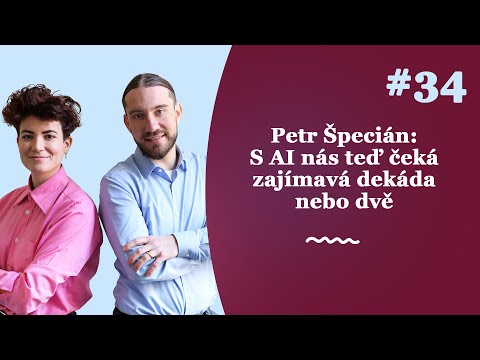
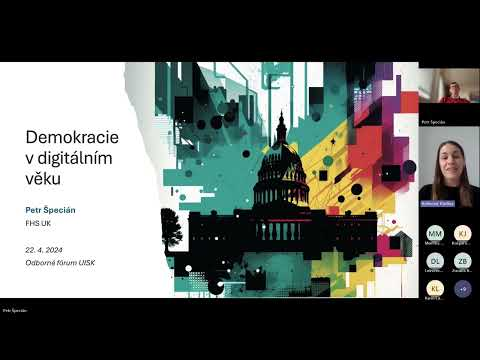
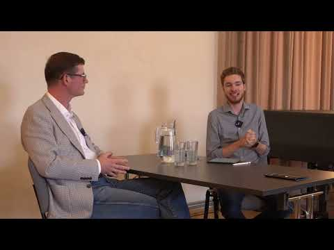
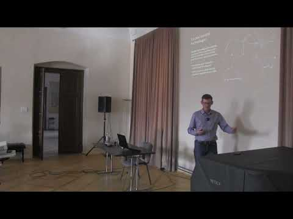
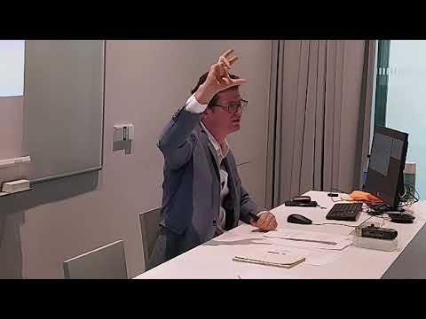
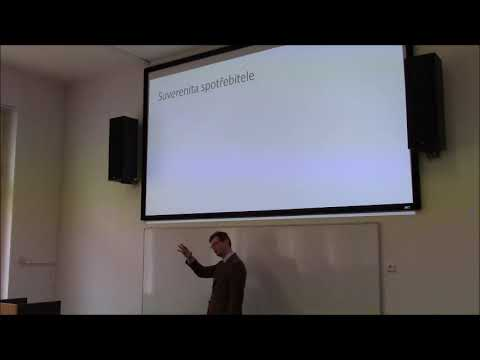

I speak regularly on AI and democracy, the future of universities, and institutional adaptation to technological change, in English and in Czech, for academic and general audiences.
Recorded talks and podcasts

Podcast · Czech · 2024
AI Institutional Transformation Is on the Way
Why chatbots deserve a chance alongside human experts, who is responsible for their outputs, and why institutional adoption is likely to continue. Zákulisí sociologie (Youradio Talk).

Lecture · Czech · 2024
GenAI-Facilitated Institutional Innovation
How generative AI could help liberal democracies overcome bottlenecks in institutional experimentation. Invited lecture, Institute of Information Studies and Librarianship, Charles University.

Interview · Czech · 2024
Expected Social Impacts of AI
Technological unemployment, inequality, institutional change, and political life in the digital age. Interview with Jakub Krejčí, Language, Mind, Society Center.

Lecture · Czech · 2023
Social Technologies of the Future
Technology understood broadly, to include institutions such as capitalism and liberal democracy. Summer school lecture, University of Hradec Králové, Broumov.

Lecture · Czech · 2022
Democracy in the Digital Age
How social-media platforms and digital information environments shape citizens' political views. Být nebo bit? conference, Prague.

Lecture · Czech · 2019
Consumer and Citizen Sovereignty
Individual normative sovereignty and the value liberal societies attach to people deciding for themselves. Invited lecture, University of Hradec Králové.
Interviews
On the economics of love (September 2026). Podcast conversation with Honza Vojtko for Potetovaná duše, Deník N, on what happens when the tools of economics are turned on intimate relationships: do we enter a relationship the way a firm enters a merger, on the basis of comparative advantage? Listen (Czech, subscription)
On AI trajectories in Czechia (April 2025). Interview with Jan Čáp for Téma magazine on artificial intelligence in Czechia and prospects for the future; the online version was published by Technet. Read (Czech)
Keynotes and invited lectures
“Pravda nebo lež? Jak je libo!” [Truth or Lie? Take Your Pick] Invited talk (16 July 2026), in Czech. STEM influencer brunch, Prague, Czechia.
“AI už je tady. Co teď?” [AI Is Here. What Now?] Opening keynote (16 June 2026), in Czech. Učím na Ostravské festival, University of Ostrava, Czechia.
“Built for Humans Only? Why AI Adoption in Higher Education Requires a New Deal” (20 May 2026). POLEMO Seminar, Central European University, Vienna, Austria.
“Mental Health vs. Artificial Intelligence” Guest seminar (13 May 2026). Ondřejov Day Psychotherapeutic Sanatorium, Prague, Czechia.
“Artificial Intelligence and the Future of Democracy: A Scenario Analysis” Guest lecture (18 November 2025). Faculty of Arts, Charles University, Prague, Czechia.
“The Purpose of Higher Education in the 21st Century: What Educational Model Do We Need?” Panel presentation (11 November 2025). Scio, Prague, Czechia.
“AI at Universities: From an Annoyance to a Basic Right” Keynote (5 November 2025). AI 4 Uni, Jan Evangelista Purkyně University, Ústí nad Labem, Czechia.
“Large Language Models in Democratic Society” Invited lecture (9 September 2024). AmKon, Plzeň, Czechia.
“Generative AI and the Future of Tertiary Education” Keynote (6 September 2024). Conference on Educational Activities of Universities, Prague, Czechia.
“Sustaining People’s Rule in the Digital Age” Invited talk (17 November 2023). Meaning of Democracy Conference, Polish Academy of Sciences, Scientific Centre in Vienna, Austria.
“Democracy in the Digital Age” Guest lecture (13 October 2022). Center for Theoretical Study, Czech Academy of Sciences, Prague.
“Suverenita spotřebitele a občana” [Sovereignty of the Consumer and the Citizen] Invited lecture (20 February 2019). Centre for the Study of Language, Mind and Society, University of Hradec Králové, Czechia.
“Economics: From History to Theory and Back” Invited talk (8 November 2017). Philosophy between Past and Future, Sungkyunkwan University, Seoul, South Korea.
Conference talks
2026
“Speakers for the Dead: AI Proxies and the Political Economy of Intergenerational Governance” (22 July 2026), with Lucy Císař Brown. European PPE Network Conference 2026, University of Bayreuth, Germany.
2025
“Built for Humans Only: On the Struggles of Institutional AI Adoption” (23 October 2025). Technology and Sustainable Futures, University of Oslo, Norway.
“Rethinking the Rules of the Game: Synthetic Data for Institutional Design” (18 September 2025). 17th Biennial INEM Conference, Bayreuth, Germany.
“Breaking the Experimentation Bottleneck: Generative Agents As Institutional Design Accelerators” (1 September 2025). WINIR 2025, Prague, Czechia.
“Digital Homunculi: Reimagining Democracy Research with Generative Agents” (17 July 2025). The PPE Society London’s First Annual Meeting, London, UK.
“From Slop to Spark: Carving New Institutional Niches for Transformative Ideas” (12 June 2025). Technology and Sustainable Futures, Oslo, Norway.
“AI Oracles: Technological Re-enchantment of the World” (8 February 2025), with Lucy Císař Brown. What Comes After GenAI?, Prague, Czechia.
2024
“AI Oracles” (19 September 2024), with Lucy Císař Brown. TEDA’24: The Magic Machine, Through the Prism of Art and Science, University of Cambridge, UK.
“Beyond the Limits: Generative AI and Synthetic Data in Democracy Research” (13 August 2024). ECPR General Conference 2024, Dublin, Ireland.
Author-meets-critics session on Behavioral Political Economy and Democratic Theory (31 May 2024). 7th International Conference Economic Philosophy, Reims, France.
“Generative AI in the Marketplace for Ideas” (30 May 2024). 7th International Conference Economic Philosophy, Reims, France.
2023
“Reimagining Institutions through Generative AI: Navigating the Maze of Institutional Innovation” (28 October 2023). Computing the Human, Brno, Czechia.
“Sociální technologie budoucnosti [Social Technologies of the Future]” (29 September 2023). Summer school, University of Hradec Králové, Broumov, Czechia.
“Democratizing Expertise: The Limits and Possibilities of Artificial Intelligence in Enhancing Democratic Decision-Making” (8 September 2023). ECPR General Conference 2023, Prague, Czechia.
“Large Language Models for Democracy: Limits and Possibilities” (16 June 2023). Technology and Sustainable Development 2023, Østfold University College, Norway.
“LLMs for Democracy” (19 May 2023). Fortifying Democracy for the Digital Age: Interdisciplinary Perspectives, Prague, Czechia.
2022
“Science and Trust in the Digital Age” (22 October 2022). Scientific Knowledge and Its Public Understanding: Interdisciplinary Perspectives, Seville, Spain.
“The Specter of Political Irrationality and the Anti-Psychological State” (19 August 2022). Truth and Politics: A Political Epistemology Conference, Bamberg, Germany.
“Democracy and Anthropic Risk” (2 July 2022). Panel “Risks in the Anthropocene”, Green Marble 2022, Porto, Portugal.
“Demokracie v digitálním věku [Democracy in the Digital Age]” (3 June 2022). Být nebo bit?, Prague, Czechia.
2021
“The Conceit of Behaviorally Informed Paternalism” (22 October 2021). Perspectives of Paternalism in a Democratic Society, online.
“Oběti či oportunisté? Racionalita ve světle diskuse o dezinformacích [Victims or Opportunists? Rationality in the Light of the Debate on Disinformation]” (30 September 2021). Hradecké filozofické dny, Hradec Králové, Czechia.
“Pandemická epistemologie: Lekce z pandemické krize [Pandemic Epistemology: Lessons from an Epistemic Crisis]” (16 September 2021). XXV. česko-slovenské sympózium o analytickej filozofii, Banská Bystrica, Slovakia.
“Economists in the Democratic Discourse” (25 June 2021). 5th International Economic Philosophy Conference, online.
“Economists in the Democratic Discourse: Between Elitism and Egalitarianism” (20 June 2021). 11th MetaLawEcon Workshop, online.
“Fake News and the Victim Narrative” (7 March 2021). ENPOSS/ANPOSS/POSS-RT 2021 Joint Conference, online.
2017–2019
“The Will to Believe: Demand for Bullshit in a Post-Truth World” (29 November 2019). CaL2019: Cognition and Lying, Brno, Czechia.
“Thou Shalt Not Nudge: Towards an Anti-Psychological State” (21 August 2019). 14th Conference of the International Network for Economic Method, Helsinki, Finland.
“Thou Shalt Not Nudge: Towards an Anti-Psychological State” (7 August 2019). 16th International Congress on Logic, Methodology and Philosophy of Science and Technology, Prague, Czechia.
“Normativity Shifting: Nudging and Sovereignty” (28 June 2018). 4th International Conference Economic Philosophy, Lyon, France.
Organized conferences and events
What Comes After GenAI? Exploring the Limits of One-Size-Fits-All AI for Democracy and Knowledge. Prague University of Economics and Business, 7–8 February 2025. With Mirek Vacura and Eugenia Stamboliev.
AI Futures Workshop. Faculty of Social Sciences, Charles University, 2 June 2025. Closed expert workshop on AI development scenarios, with participants from academia, České priority, Effective Altruism Czech Republic, and the Confido Institute.
Workshop on AI from the Perspective of the Social Sciences and Humanities. Charles University, November 2023.
Fortifying Democracy for the Digital Age: Interdisciplinary Perspectives. International conference, Prague University of Economics and Business, 18–20 May 2023.
Perspectives of Paternalism in a Democratic Society. International conference, online, 22–23 October 2021.
Současná filosofie vědy [The Current Philosophy of Science]. Prague University of Economics and Business, 14 September 2018.
Member of the organizing committee, The Society for Cognitive Science and Philosophy, 2012–2019.